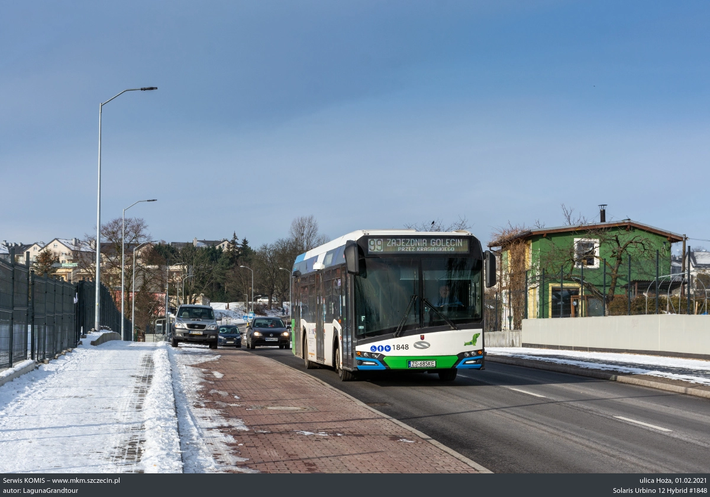
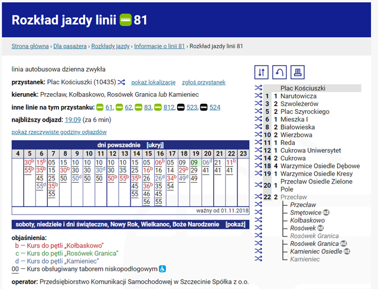
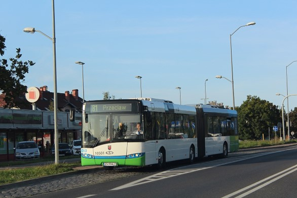

Komunikacja miejska w Szczecinie by Dawid Burdzicki
Czym jest ZDITM?
Skrót ZDITM oznacza Zarząd Dróg i Transportu Miejskiego.
Jakie są zadania ZDITM?
Do zadań Zarządu Dróg i Transportu Miejskiego w Szczecinie należy:
- finansowanie, planowanie, utrzymanie i ochrona dróg publicznych oraz organizacja ruchu na drogach publicznych
w granicach administracyjnych miasta Szczecin
- zarządzanie, gospodarowanie, finansowanie, oznakowanie i utrzymanie użytków gruntowych stanowiących własność Gminy Miasto Szczecin, nie zarządzanych przez inne podmioty
- organizacja, nadzór i kontrola oczyszczania ulic w mieście Szczecin
- przewóz, organizacja, zarządzanie, planowanie i sterowanie transportem zbiorowym (tj. pełnienie roli organizatora publicznego transportu zbiorowego)

Zdjęcie powyżej prezentuje jedno z zadań ZDITMu, jakim jest transport pasażerów.
Co łączy ZDITM i szczecińskie autobusy?
ZDITM odpowiada za wszystkie elementy komunikacji miejskiej w Szczecinie. Spółka musi zapewnić pojazdy, które będą przewozić ludzi po całym mieście. Dodatkowo muszą oni ułożyć rozkłady jazdy i zaplanować przebieg wszystkich linii. Ważnym elementem działalności ZDITM jest również zatrudnienie odpowiedniej liczby kierowców oraz wypłacanie im odpowiedniej pensji. Wszystkie rozkłady jazdy, zarówno autobusów jak i tramwajów, znajdują się na stronie ZDITM.

Zajezdnie autobusowe w Szczecinie
Szczecińskie Przedsiębiorstwo Autobusowe „Klonowica”
Szczecińskie Przedsiębiorstwo Autobusowe „Klonowica”
Szczecińskie Przedsiębiorstwo Autobusowe „Dąbie”
Szczecińskie Przedsiębiorstwo Autobusowe „Dąbie”
Przedsiębiorstwo Komunikacji Samochodowej w Szczecinie
Przedsiębiorstwo Komunikacji Samochodowej w Szczecinie
Szczecińsko-Polickie Przedsiębiorstwo Komunikacyjne
Szczecińsko-Polickie Przedsiębiorstwo Komunikacyjne
Linie autobusowe i tramwajowe w Szczecinie
Linie autobusowe i tramwajowe w Szczecinie